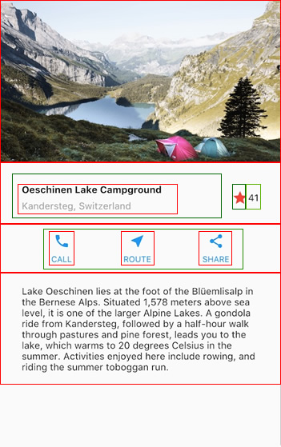

Flutter利用Dart語言進行設計，而每個flutter頁面均由許多widgets所構成，widget為Dart類別(class)，藉由整合不同的widgets來建立APP應用程式。widget包含具狀態(stateful)與不具狀態(stateless)兩種，具狀態widget允許動態修改widget內容值，也就是說頁面元件內容如果會動態變動，就需要使用stateful(具狀態)widget，反之stateless(不具狀態)widget代表widget內容在APP應用程式中絕不會改變。每個widget一定會有一個build函數，用於將現在的widget加入project widgets架構中。
Flutter的版面由許多不同的widgets(程式片段)組合而成，設計時會將版面由上而下分解成widgets tree，再將設計好的widgets由下而上進行組合來建構整個設計版面，以下圖為例：整個版面以縱向(直)來看包含一張圖片；一排字、圖示與文字；一排按鈕與一塊文字，這樣的版面可分解為一欄(column)包含四個小孩(children)。欄的第二個小孩為橫向列(row)包含3個小孩，而橫向的第一個小孩為縱向欄(column)包含兩個小孩。如此類推我們將版面分解為如圖的widgets樹。
